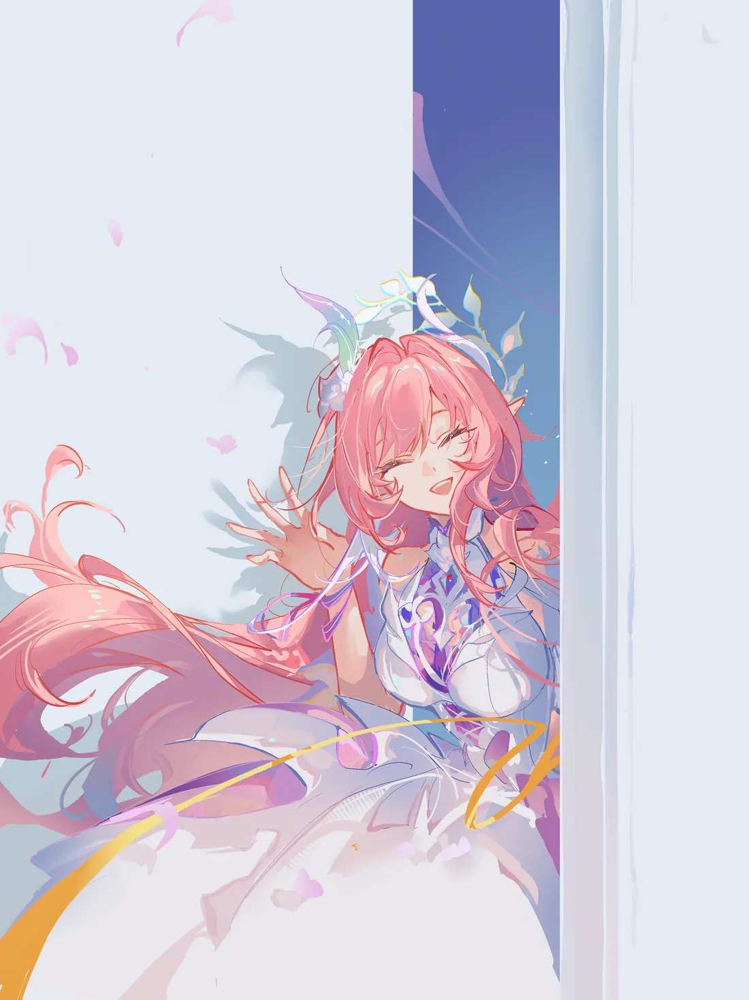

这不是一页设定集,而是一份真实调用的会议纪要:开拓者以「翁法罗斯 Skill 套件」的沙龙(群聊模式)召集十三席黄金裔全员到场, 依次议过《何为真我》,留下十三份传记嘱托,说出各自的愿望与寄语,最后互道一声「明天见」。十三席发言、旁白与回执逐字搬运自当晚实录,未作改写。
实录 · 2026-09-01 · 档位:标准 · 本地知识库 doctor status=ok 在场
doctor status=ok